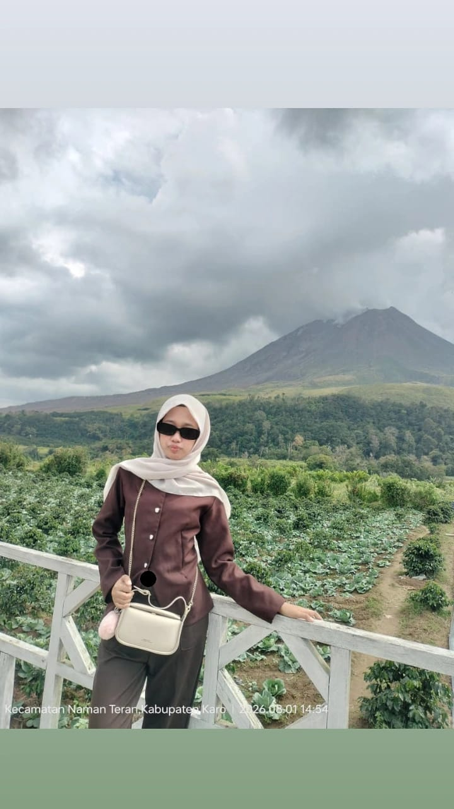
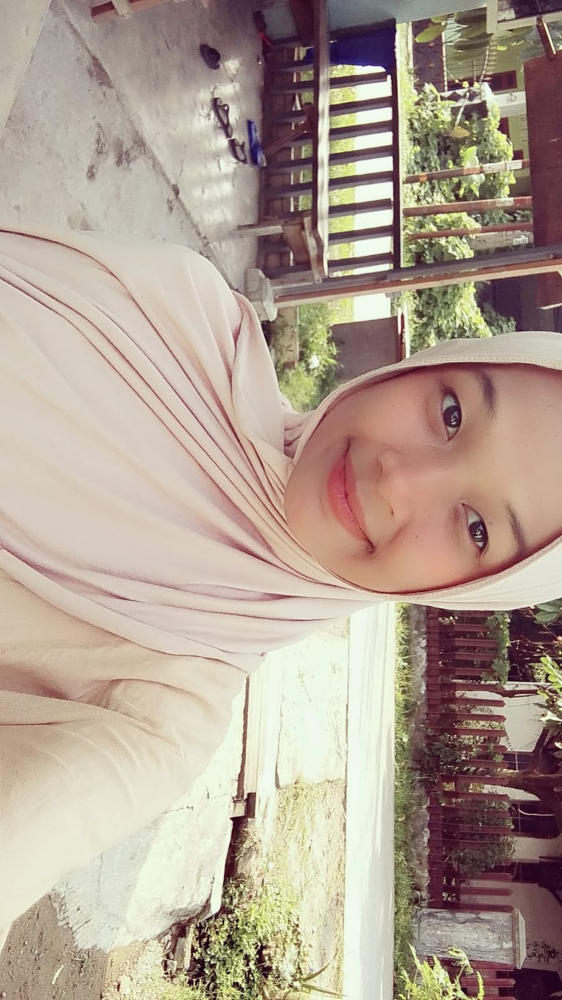
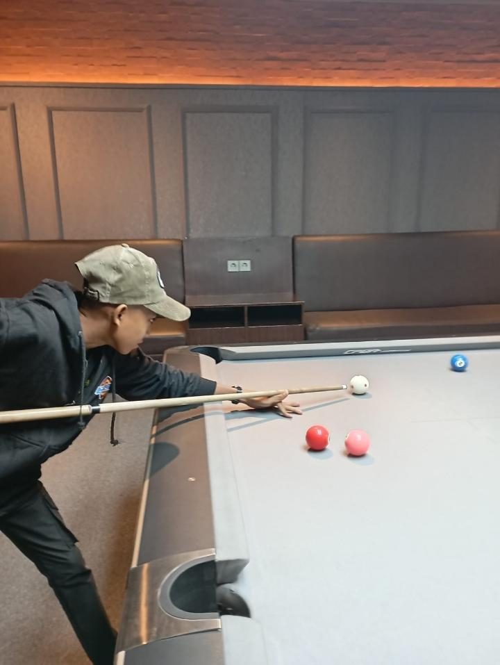
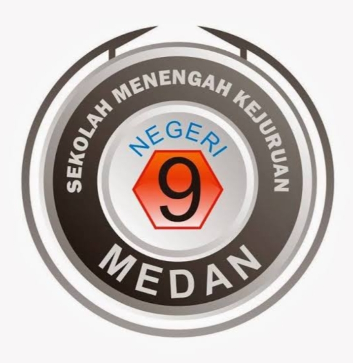
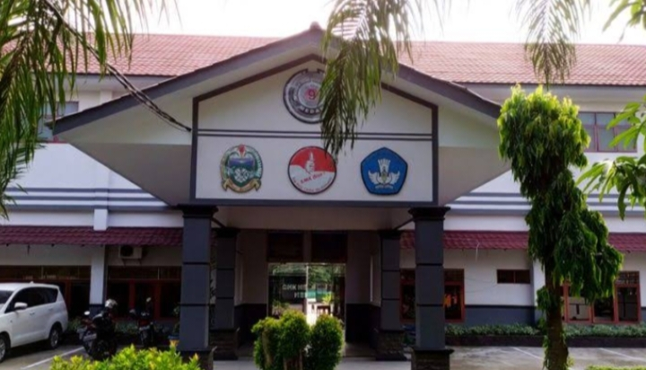
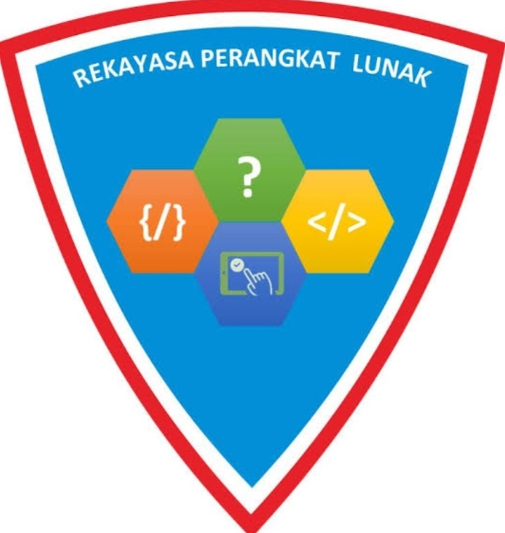

Generasi Hebat
Prestasi Tanpa Narkoba & Integritas Bebas Korupsi
Jauhi narkoba dan gunakan masa muda untuk belajar serta melakukan kegiatan positif.
Mari membangun karakter yang jujur, disiplin dan bertanggung jawab.
Berprestasi, Berkarakter, dan Berintegritas
SMK NEGERI 9 MEDAN
Jl. Patriot No. 20 A Medan, Sumatera Utara
Menjadi sekolah yang unggul dalam prestasi, berkarakter dan berintegritas.
Meningkatkan kualitas pembelajaran dan mengembangkan potensi peserta didik.

Jabatan: Ketua
Kelas: XI RPL 4
Jurusan: RPL

Jabatan: Anggota
Kelas: XI RPL 4
Jurusan: RPL

Jabatan: Anggota
Kelas: XI RPL 4
Jurusan: RPL
Kelompok kami terdiri dari tiga orang siswa yang bekerja sama dalam menyelesaikan tugas pembuatan website sekolah.
Website ini dibuat sebagai media untuk memperkenalkan sekolah, anggota kelompok, kegiatan ekstrakurikuler, serta informasi mengenai sekolah.
Dalam pembuatan website ini, kami belajar menggunakan HTML5 untuk membuat struktur halaman dan CSS untuk mengatur tampilan website agar lebih menarik dan rapi.
Jauhi narkoba dan gunakan masa muda untuk belajar serta melakukan kegiatan positif.
Mari membangun karakter yang jujur, disiplin dan bertanggung jawab.
| No | Ekstrakurikuler | Hari | Waktu |
|---|---|---|---|
| 1 | Futsal | Senin | 15.00 - 17.00 |
| 2 | Pramuka | Selasa | 15.00 - 17.00 |
| 3 | PMR | Rabu | 15.00 - 17.00 |


